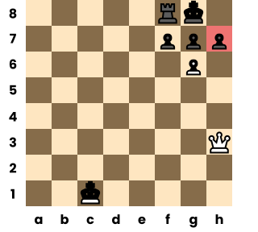

Mating Patterns
In chess there are several patterns that occur in checkmates, and they occur frequently enough that they all have their own names.
Learning these patterns are important as they will help you recognise the possibilites of checkmate when they arise in your games.
There are many checkmate patterns out there but here are some of the ones that a beginner should know.
Queen Combinations
The queen is the most deadly of pieces for performing a checkmate - at close range, the queen can trap the enemy king at the side of the board and cover all the king’s escape squares by itself. Despite this power, the queen can still be captured like any other piece, so usually the queen relies on the support of a second piece when delivering checkmate.
For beginners the most common queen mates will occur on the h7 and g7 squares, however you can apply these queen combinations from anywhere on the board if you have the pieces available.
Queen and Knight
Queen and Bishop
Queen and Pawn
H7
G7

Rook Combinations
Rooks are less powerful than the queen, and therefore usually need at least one other piece to cover the enemy king's escape squares.
2 Rook Mate
This is a pattern that commonly appears in the end game. The example above is most commonly referred to as the the ladder mate as you force the king to move file-by-file until it is checkmate. But there are multiple ways you can mate your opponent utilising the cutting off of files with your rooks.
Back Rank Mate
The back rank checkmate is another common pattern that occurs when a king is trapped behind its own pawns and gets mated by either a rook or queen.
In most situations the pawn shield does a great job to protect the king, but you should be aware of the potential back rank weakness.
One way to deal with this weakness is to play a move known as creating “luft” (German word for “air”), a chess term which means you open an escape square for your king, usually by advancing the g or h pawn one square.
Smothered Mate
The smothered mate is a checkmate pattern that is only possible if the enemy king is completely surrounded by his own pieces. It also features the unique jumping ability of the knight. Though a unique checkmate, it is a suprisingly common checkmate.
Suffocation Mate
The suffocation mate is a variation of the smothered mate but involves the use of a bishop (or queen) and knight to execute.